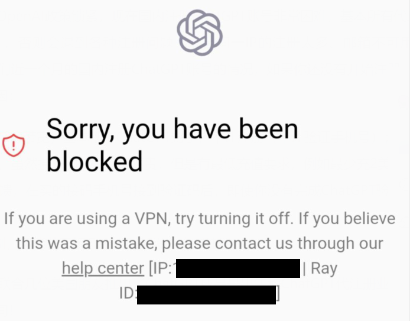
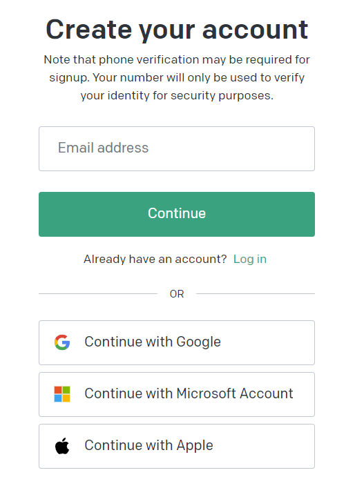
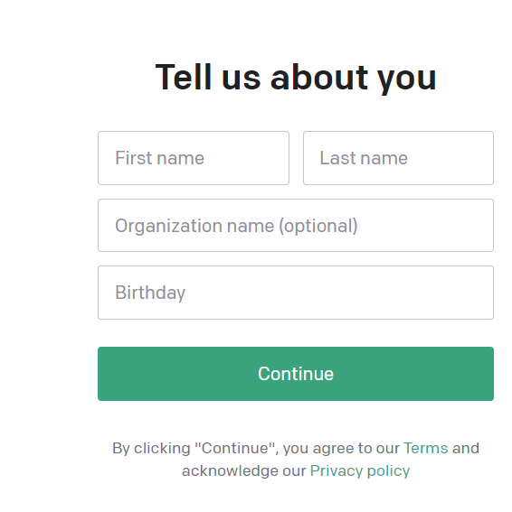
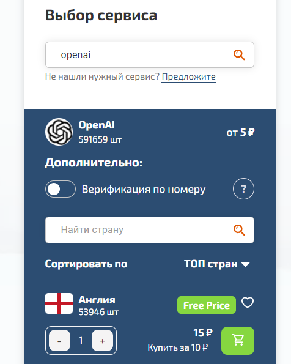

国内如何注册OpenAI账号并使用chatGPT
注意：此文章写于2023年7月2日17点49分，内容可能过时。
前提条件
1.魔法工具。美/日成功率更高点，不可以是OpenAI不支持的国家（例如俄）。请不要使用免费的梯子，免费的梯子绝大多数都被OpenAI封了。（如下图）

2.用于接收验证邮件的任意国外邮箱。（下文以谷歌邮箱为例）
3.用于接收验证码的国外手机号。
账号注册流程
首先进入该网站 Introducing ChatGPT ，点击右上角Sign Up进入注册页面。
注册页面如图所示，写上你的邮箱点击Continue。输入邮箱后，OpenAI会让你设置密码，设置完毕后点击Continue。

之后OpenAI会给你的注册邮箱发一封邮件，点击邮件里的链接继续注册。
接下来是输入个人信息（生日一定要成年）。生日的输入格式是日期/月份/年份。例如我是2000年2月1号，就输入01/02/2000。

以上都完成以后，下一个就是手机验证。由于一般人确实没有外国手机号，这里采用的方法是用虚拟手机号接收验证码。点击前往该网站 SMS-Activate 注册账号并充值2美元。在左下角搜索OpenAI并且购买任意号码，将号码填入OpenAI注册的手机验证。

输入手机验证码后就完成了！你可以使用chatGPT了。